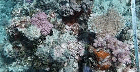

Our Datasets
A curated selection of datasets and benchmark resources (images shown are illustrative previews).
Marine-tree: A Large-scale Hierarchically Annotated Dataset for Marine Organism Classification
Hierarchical image classification • fine-grained taxonomy • large-scale labeling

Jarvis: A Voice-based Context-as-a-Service Mobile Tool for a Smart Home Environment
Context-as-a-service • mobile sensing • voice interaction

Brain Shift Correction: Intra-operative Ultrasound (iUS)
Surgical guidance • segmentation • registration / correction

Cardiac MRI under Respiratory Motion
Motion robustness • cardiac analysis • temporal consistency

Social Media Event Detection (Demo/Benchmark)
Event detection • multimodal / social signals • real-world streams
Hierarchical Classification (Additional Benchmark)
Taxonomy-aware learning • long-tailed categories • robust evaluation